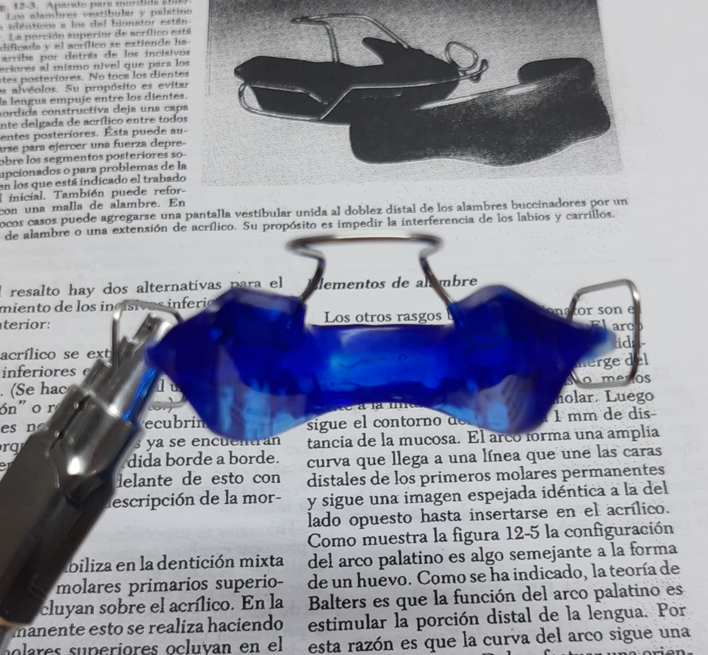
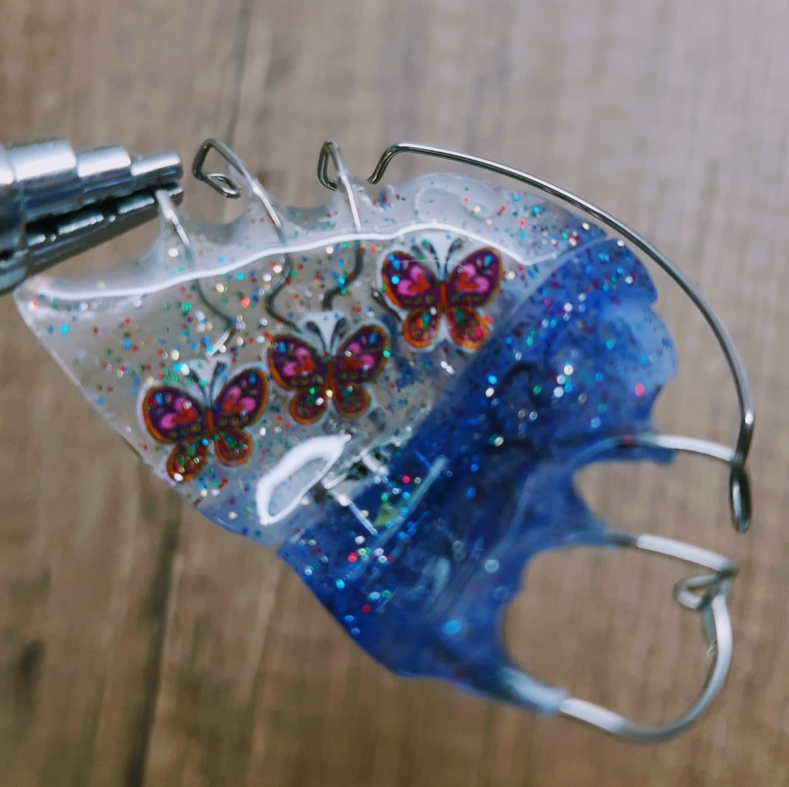

LABORATORIO BREGAN
Ortodoncia y Ortopedia Funcional
Placas sin tornillo
.............................................................
Placas Activas
placa schwartz con tornillo de expansión
placa schwartz con tornillo para protrusión
placa schwartz con tornillo abanico
placa progenie con tornillo
placa con tornillo triple Bertoni
placa Nord con tornillo de expansión
placa de Mauricio con tornillo de expansión
Monoblock de Mauricio con tornillo de expansión
................................................................
Ortopedia funcional de los maxilares (O.F.M.)
Activador de Andresen-Haupl
Activador abierto elástico de Klammt
Inversor de Arceguet
Modelador Elástico de Bimler
Bionator de Balters
Regulador de función de Frankel
Simoes Networks
Placas de Pedro Planas con Tornillo
Escudillas retrolabiales
................................................................
Profesional a cargo
Ramiro Bregan
Técnico en Laboratorio Dental
M.P.1868
contacto
3513430200
dirección
José de Maturana 1111/Urca
ramirobregan@gmail.com
.............................................................
LABORATORIO BREGAN
Ortodoncia y Ortopedia Funcional
Disyuntores
| Disyuntor de Mc Namara | Disyuntor Hyrax sin bandas | Disyuntor de Hass sin bandas |
|---|
Aparatología fija
quad helix sin bandas
six Helix sin bandas
Plan Helix
Arco Lingual sin bandas
Barra Transpalatina sin bandas
Botón de Nance sin bandas
Pendulum de Hilgers(T.M.A) sin bandas
Gotera-arco labio lingual con ganchos para tracción extraoral sin bandas
............................................................................
A.T.M(Articulación Temporomandibular)
Placa miorelajante con guías caninas
Placa miorelajante con arco vestibular
Placa de reposición mandibular

FOTOS
Disyuntor de McNamara.


..................................................
Bionator ll (protector) para mordida abierta.



..................................................................
Activador Abierto Elástico de Klammt.


......................................................
Placas Miorrelajantes.


............................................................................
Placa Schwartz con tornillo de expansión.


 placa schuartz con t d exp foto 4.jpeg)
..................................................
Inversor de Arceguet con parrilla deslizante.


...................................................................
Activador de Schmuth.


..............................................................................
Placa de Mauricio con tornillo de expansión.

..................................................
Placa de Mauricio con tornillo sectorizado.

............................................................................................
Placa Schwartz con tornillo medio y resortes anteriores.

..........................................................................................................
Bimler tipo B (Deck Biss).

.jpeg)


..................................................................
Placa Schwartz con tornillo y medio y brazos para cerrar diastema.

....................................................................
Bionator 3 con tornillo de expansión bimaxilar.


..................................................
Monoblock de Mauricio con tornillo medio y tornillo para distalar molares.


.............................................................................................................
.
Placa con doble tornillo para distalar.
.jpeg)
......................................................
Bimler A0.

............................................................
...................................................................